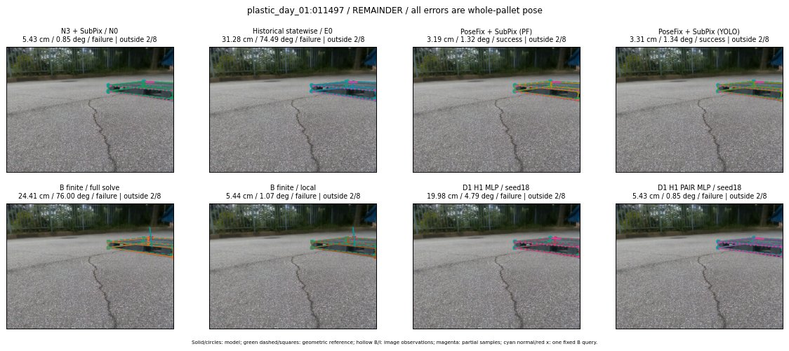

Whole-pallet pose errors; reference is a fixed geometric annotation, not certified physical GT.

Scores are uncalibrated logits. N0 retention is a numerical pose alias; it differs from H0 none or B fallback. B/I and profiles in baseline/B panels are original observations; L panels use new D1 observations. Only one deterministic supported B query is shown in a thumbnail; full support counts are below. Grey privacy rectangles edit the display copy only and are unrelated to O states; all observations were measured on original pixels. Thumbnails use JPEG quality85; detailed scientific panels are PNG.
| Method | Whole pose / cm, deg | Actual source | Selected ID | Score | Archived candidates | Eligible | N0 retained | H0 none | Fallback | Finite profiles |
|---|---|---|---|---|---|---|---|---|---|---|
| Raw YOLO + F | 12.40 cm / 1.45 deg / failure | OTHER | None | N/A | N/A | N/A | False | N/A | None | N/A |
| N3 + SubPix / N0 | 5.43 cm / 0.85 deg / failure | N0 | None | N/A | N/A | N/A | True | N/A | None | N/A |
| Historical statewise / E0 | 31.28 cm / 74.49 deg / failure | E0_REGENERATED | None | N/A | N/A | N/A | False | N/A | False | N/A |
| PoseFix raw | 6.73 cm / 1.37 deg / failure | OTHER | None | N/A | N/A | N/A | False | N/A | None | N/A |
| PoseFix + SubPix (PF) | 3.19 cm / 1.32 deg / success | OTHER | None | N/A | N/A | N/A | False | N/A | False | historical support records 9; finite audit N/A |
| PoseFix + SubPix (YOLO) | 3.31 cm / 1.34 deg / success | OTHER | None | N/A | N/A | N/A | False | N/A | False | historical support records 9; finite audit N/A |
| Historical L, seed18 | 5.43 cm / 0.85 deg / failure | N0 | N0 | N/A | 77 | 77 | True | True | True | N/A |
| Historical B fixed bank | 31.28 cm / 74.49 deg / failure | E0_REGENERATED | G13/SWAPPED_WD/sample/0 | N/A | N/A | N/A | False | N/A | False | N/A |
| Historical B full | 27.27 cm / 15.95 deg / failure | OTHER | NEW/B/ORIGINAL_WD/h0/LOGGED/G13/ORIGINAL_WD/outline_consider/41/PROPOSED_NATIVE_YAW_0 | N/A | N/A | N/A | False | N/A | False | N/A |
| Historical edge full | 23.57 cm / 12.51 deg / failure | OTHER | NEW/edge/ORIGINAL_WD/h0/LOGGED/G13/ORIGINAL_WD/outline_consider/41/PROPOSED_NATIVE_YAW_0 | N/A | N/A | N/A | False | N/A | False | N/A |
| Historical AB full | 27.25 cm / 15.98 deg / failure | OTHER | NEW/AB/ORIGINAL_WD/h0/LOGGED/G13/ORIGINAL_WD/outline_consider/41/PROPOSED_NATIVE_YAW_0 | N/A | N/A | N/A | False | N/A | False | N/A |
| B finite / fixed bank | 15.38 cm / 3.53 deg / failure | OTHER | LOGGED/G10/ORIGINAL_WD/outline_consider/13 | N/A | N/A | N/A | False | N/A | False | 6/6 |
| B finite / full solve | 24.41 cm / 76.00 deg / failure | OTHER | NEW_FINITE/B/SWAPPED_WD/h0/G13/SWAPPED_WD/sample/0/PROPOSED_NATIVE_YAW_0 | N/A | N/A | N/A | False | N/A | False | 6/6 |
| B finite / local | 5.44 cm / 1.07 deg / failure | OTHER | NEW_FINITE/B/ORIGINAL_WD/h0/N0_LOCAL_SAME_PHYSICAL_POSE/ORIGINAL_WD | N/A | N/A | N/A | False | N/A | False | 6/6 |
| Edge finite / full solve | 30.61 cm / 74.79 deg / failure | OTHER | NEW_FINITE/edge/SWAPPED_WD/h0/G13/SWAPPED_WD/sample/0/PROPOSED_NATIVE_YAW_0 | N/A | N/A | N/A | False | N/A | False | 6/6 |
| D0 H0 MLP / seed18 | 5.43 cm / 0.85 deg / failure | N0 | N0 | 3.3321592807769775 | 40 | 40 | True | True | True | N/A |
| D0 H0 MLP / seed19 | 5.43 cm / 0.85 deg / failure | N0 | N0 | 4.840576648712158 | 40 | 40 | True | True | True | N/A |
| D0 H0 MLP / seed20 | 5.43 cm / 0.85 deg / failure | N0 | N0 | 0.17482000589370728 | 40 | 40 | True | True | True | N/A |
| D0 H1 MLP / seed18 | 19.98 cm / 4.79 deg / failure | OTHER | G13/ORIGINAL_WD/endpoint/37 | -1.0240451097488403 | 40 | 40 | False | False | False | N/A |
| D0 H1 MLP / seed19 | 19.98 cm / 4.79 deg / failure | OTHER | G13/ORIGINAL_WD/endpoint/37 | -1.078173041343689 | 40 | 40 | False | False | False | N/A |
| D0 H1 MLP / seed20 | 19.98 cm / 4.79 deg / failure | OTHER | G13/ORIGINAL_WD/endpoint/37 | -2.7463536262512207 | 40 | 40 | False | False | False | N/A |
| D1 H0 MLP / seed18 | 5.43 cm / 0.85 deg / failure | N0 | N0 | 7.12148904800415 | 40 | 40 | True | True | True | N/A |
| D1 H0 MLP / seed19 | 5.43 cm / 0.85 deg / failure | N0 | N0 | 8.389610290527344 | 40 | 40 | True | True | True | N/A |
| D1 H0 MLP / seed20 | 5.43 cm / 0.85 deg / failure | N0 | N0 | 7.219969272613525 | 40 | 40 | True | True | True | N/A |
| D1 H1 MLP / seed18 | 19.98 cm / 4.79 deg / failure | OTHER | G13/ORIGINAL_WD/endpoint/37 | 0.36850276589393616 | 40 | 40 | False | False | False | N/A |
| D1 H1 MLP / seed19 | 19.98 cm / 4.79 deg / failure | OTHER | G13/ORIGINAL_WD/endpoint/37 | 0.008565995842218399 | 40 | 40 | False | False | False | N/A |
| D1 H1 MLP / seed20 | 15.38 cm / 3.53 deg / failure | OTHER | G10/ORIGINAL_WD/endpoint/13 | -0.05428038537502289 | 40 | 40 | False | False | False | N/A |
| D1 H1 ROLE AFFINE / seed18 | 19.98 cm / 4.79 deg / failure | OTHER | G13/ORIGINAL_WD/endpoint/37 | -0.07334719598293304 | 40 | 40 | False | False | False | N/A |
| D1 H1 ROLE AFFINE / seed19 | 19.98 cm / 4.79 deg / failure | OTHER | G13/ORIGINAL_WD/endpoint/37 | -0.4040150046348572 | 40 | 40 | False | False | False | N/A |
| D1 H1 ROLE AFFINE / seed20 | 19.98 cm / 4.79 deg / failure | OTHER | G13/ORIGINAL_WD/endpoint/37 | -0.02914467081427574 | 40 | 40 | False | False | False | N/A |
| D1 H1 PAIR MLP / seed18 | 5.43 cm / 0.85 deg / failure | N0 | N0 | -1.3247660398483276 | 40 | 2 | True | False | False | N/A |
| D1 H1 PAIR MLP / seed19 | 5.43 cm / 0.85 deg / failure | N0 | N0 | -1.116695523262024 | 40 | 2 | True | False | False | N/A |
| D1 H1 PAIR MLP / seed20 | 5.43 cm / 0.85 deg / failure | N0 | N0 | -0.8920670747756958 | 40 | 2 | True | False | False | N/A |
| D1 H1 PAIR ROLE AFFINE / seed18 | 5.43 cm / 0.85 deg / failure | N0 | N0 | -0.24567502737045288 | 40 | 2 | True | False | False | N/A |
| D1 H1 PAIR ROLE AFFINE / seed19 | 5.43 cm / 0.85 deg / failure | N0 | N0 | -0.5503044128417969 | 40 | 2 | True | False | False | N/A |
| D1 H1 PAIR ROLE AFFINE / seed20 | 5.43 cm / 0.85 deg / failure | N0 | N0 | -0.33377209305763245 | 40 | 2 | True | False | False | N/A |
| Regenerated common E0 | 31.28 cm / 74.49 deg / failure | E0_REGENERATED | E0_REGENERATED | N/A | N/A | N/A | False | N/A | False | N/A |